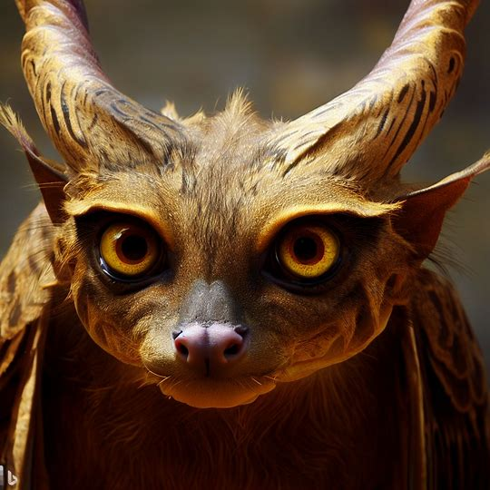
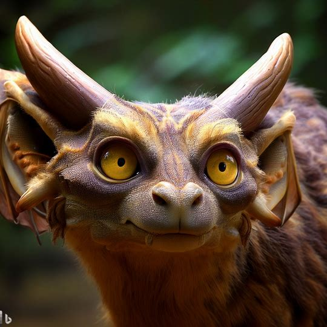
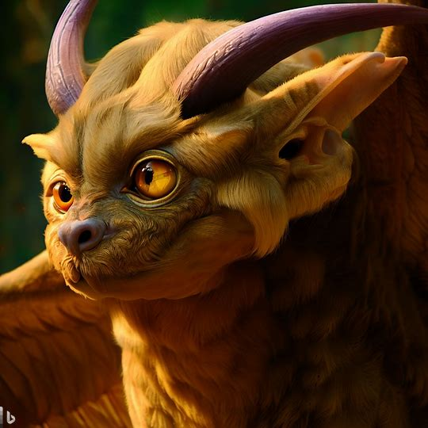
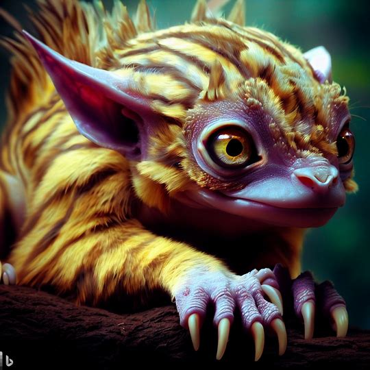

Fantasy & Beyond Museum

- Grifolnux
- グリフォルヌクス




-
グリフォルヌクスは、中程度の大きさの哺乳類であり、猫のような身体つきをしています。
- その体毛は、鮮やかな青緑色で、波状になっているため、見る者に光沢を与えます。
- 頭部には、長くしなやかな角が2本生えており、黄金色の模様が入っています。
- 目は大きく、まるい形をしており、深い紫色をしています。
- 足は強靭で、鋭い爪があり、木登りに適しています。
- 尾は太く、長さは体長の半分ほどあり、先端には大きな羽があります。
- 食性は主に草食で、特に多肉植物や果物を好んで食べます。
- 鳴き声は甲高い声で、響き渡るような鳴き声を発します。